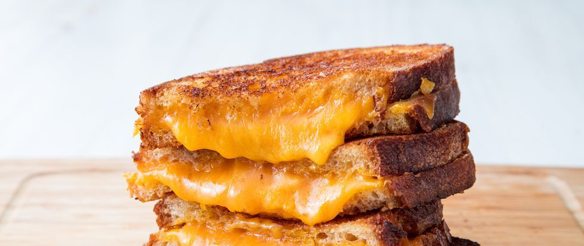

Gilled cheese sandwich

For 2 people
Ingredience
- Bread 4 slices
- Gruyere to cover 2 sclices Bread
- Butter
- Mayonnaise
- Cherry tomatoes ca 20
- Onions
- Garlic 1 tuber
Steps
- Cut onion in rough slices
- Remove head of garlic tuber let the cover
- Put above and cherry tomatoes, olive oil in a dish
- Put the dish in the oven for 25min at 200°C convection air
- Press out garlic in a bowl and add stuff from oven and puree it, salt an pepper
- Coat bred with butter and mayo. Put cheese on mayo side. Rost it
- Finito